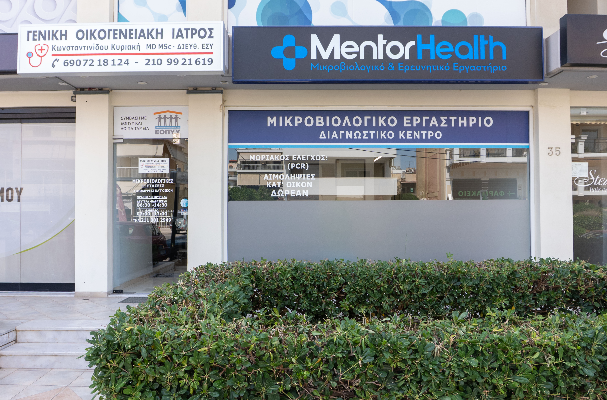
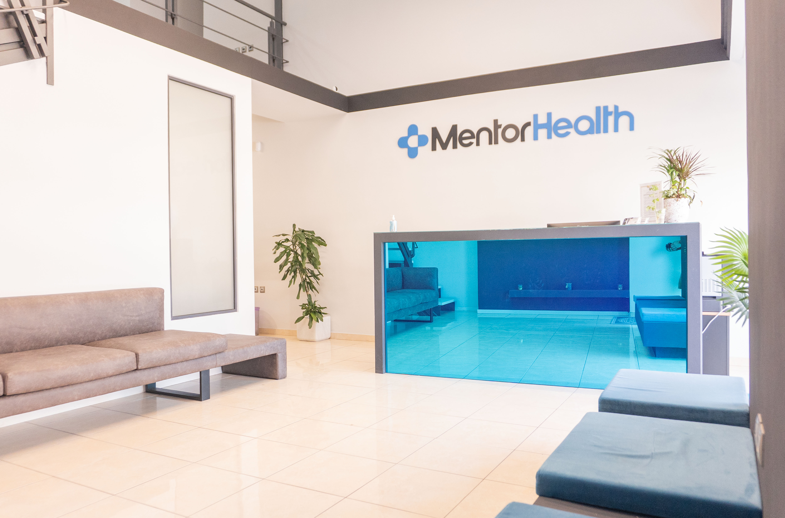
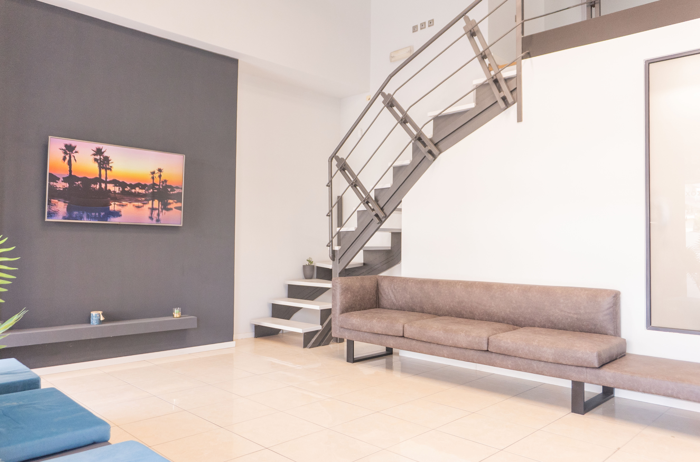
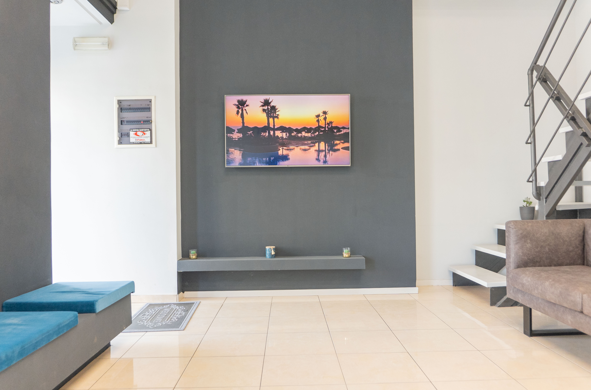

Συνταγογράφηση & Παραπεμπτικά ΕΟΠΥΥ
Άμεση έκδοση συνταγών και παραπεμπτικών με υπεύθυνη ιατρική καθοδήγηση
Μάθετε περισσότερα
Στόχος μου είναι να σας φροντίζω με σύγχρονη ιατρική προσέγγιση και να χτίζω μια σταθερή σχέση εμπιστοσύνης μαζί σας.
Σας προσφέρω προσωπική φροντίδα με έμφαση στην πρόληψη
Άμεση έκδοση συνταγών και παραπεμπτικών με υπεύθυνη ιατρική καθοδήγηση
Μάθετε περισσότερα
Έγκαιρη διάγνωση και καθοδήγηση για τη διατήρηση της υγείας
Μάθετε περισσότερα
Άμεση ιατρική εκτίμηση και αντιμετώπιση επειγόντων περιστατικών
Μάθετε περισσότερα
Συστηματική παρακολούθηση χρόνιων παθήσεων με στόχο τη σταθερότητα
Μάθετε περισσότερα
Ιατρικές υπηρεσίες στο σπίτι με ασφάλεια και άνεση
Μάθετε περισσότερα
Έγκυρες ιατρικές βεβαιώσεις για εργασία, αθλητισμό και διοικητικές χρήσεις
Μάθετε περισσότεραΕίμαι Γενικός Ιατρός με στόχο να προσφέρω ουσιαστική και άμεση φροντίδα σε κάθε ασθενή. Ασχολούμαι με τη διαχείριση χρόνιων νοσημάτων, την πρόληψη και τη συνολική παρακολούθηση της υγείας, δίνοντας έμφαση στην προσωπική σχέση εμπιστοσύνης.
Πιστεύω ότι η ιατρική δεν είναι απλώς διάγνωση και θεραπεία, αλλά συνεχής υποστήριξη, καθοδήγηση και φροντίδα με σεβασμό στις ανάγκες κάθε ανθρώπου.
Παρέχω ολοκληρωμένες υπηρεσίες πρωτοβάθμιας φροντίδας υγείας, καλύπτοντας:

Αφιερώνω χρόνο για να κατανοήσω πλήρως τις ανάγκες σας και να προσφέρω εξατομικευμένη φροντίδα.
Στόχος μου είναι η γρήγορη και αποτελεσματική αντιμετώπιση, χωρίς καθυστερήσεις.
Δεν σταματάμε στη διάγνωση — είμαι δίπλα σας σε όλη τη διάρκεια της θεραπείας.
Χτίζω σχέσεις εμπιστοσύνης με υπευθυνότητα και επιστημονική συνέπεια.
Συνδυάζω πρόληψη, παρακολούθηση και ουσιαστική επικοινωνία, ώστε να έχετε μια σταθερή ιατρική αναφορά.
Με σπουδές Ιατρικής, ειδικότητα Γενικής Ιατρικής και MSc Δημόσιας Υγείας, προσφέρω τεκμηριωμένη και σύγχρονη φροντίδα.
Η πολυετής παρουσία μου σε Κέντρα Υγείας και Περιφερειακά Ιατρεία μου επιτρέπει να αντιμετωπίζω με υπευθυνότητα καθημερινά και σύνθετα περιστατικά.
Δίνω χρόνο να σας ακούσω, να κατανοήσω τις ανάγκες σας και να σας καθοδηγήσω με συνέπεια και σαφήνεια.
Σας παρουσιάζω τον χώρο του ιατρείου μου, με στόχο να νιώσετε άνετα από την πρώτη στιγμή.




Παρακολουθουμε την αρτηριακή πίεση και σας καθοδηγώ για τη ρύθμιση της υπέρτασης.
Εξιδικευμένες ΥπηρεσίεςΣυστηματική ιατρική παρακολούθηση για τη ρύθμιση και τον έλεγχο του σακχαρώδη διαβήτη.
Εξιδικευμένες ΥπηρεσίεςΣυστηματική ιατρική παρακολούθηση για τον έλεγχο της χοληστερόλης και τη μείωση καρδιαγγειακού κινδύνου.
Εξιδικευμένες ΥπηρεσίεςΣυστηματική ιατρική παρακολούθηση για τη διαχείριση της ΧΑΠ και τον έλεγχο των αναπνευστικών συμπτωμάτων.
Εξιδικευμένες ΥπηρεσίεςΣυστηματική ιατρική παρακολούθηση για οστεοπόρωση και αρθρίτιδα με στόχο τη διατήρηση της κινητικότητας και την πρόληψη επιπλοκών.
Εξιδικευμένες ΥπηρεσίεςΙατρική υποστήριξη και συστηματική παρακολούθηση για τη διαχείριση αγχώδους διαταραχής και σχετικών συμπτωμάτων.
Σας δίνω σύντομες και ξεκάθαρες απαντήσεις για όσα θέλετε να γνωρίζετε.
Θα με βρείτε στη Λεωφόρο Ιωνίας 35, στον Άλιμο, πλησίον ΚΕΠ Αλίμου.
Ναι, σας επισκέπτομαι κατόπιν συνεννόησης.
Ναι, σας εξυπηρετώ με συνταγογράφηση και παραπεμπτικά.
Με βρίσκετε Δευτέρα, Πέμπτη, Παρασκευή 17:30–21:30 και Τετάρτη 16:00–19:30.


Σας προσφέρω μια απλή και γρήγορη φόρμα επικοινωνίας για να στείλετε το αίτημά σας άμεσα.